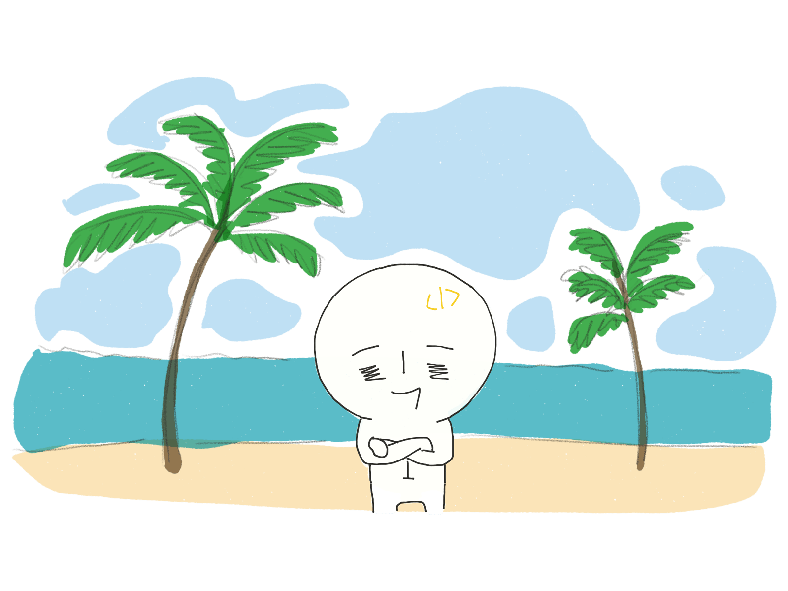

이것은 한여름이 어슴푸레 지나가기전 강원도에 휴가온 로라의 모습이다.
아침에 일어나, 커피를 마시며 정신을 차린다.
한적한 바닷길을 따라 걸으며 키야 좋다를 외친다.
가끔 만나는 바닷새들은 인사할 틈도없이 가버린다.
트위터에 나오는 새의 모양새이다.
산책을 마치고 숙소에 돌아와 넷플릭스를 켜고 맥주를 마신다.
하루는 탁 트인 바닷가 앞에 앉아 요깃거릴 채운다.
자유롭게 카페에 앉아 마스크를 벗고 노트북을 하는 일은 코로나19 이후,
좀처럼 어려운 일이 되어버렸다.
그것은 상상속에 자리매김 할 뿐이다.
그리고 유튜브를 보며 라면을 먹는 일은 유일한 소확행이다.
가끔은 잠이 들기전, 요가를 하는데 뻐적지근한 몸뚱아리는 말을 잘 듣지 않는다.
스트레칭을 자주 해줘야한다고 몸이 말한다.
일과를 마치고 폰질을 하고 잠자리에 든다.